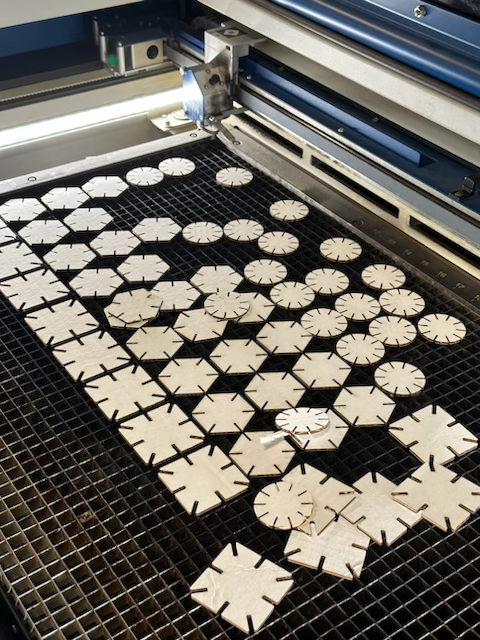
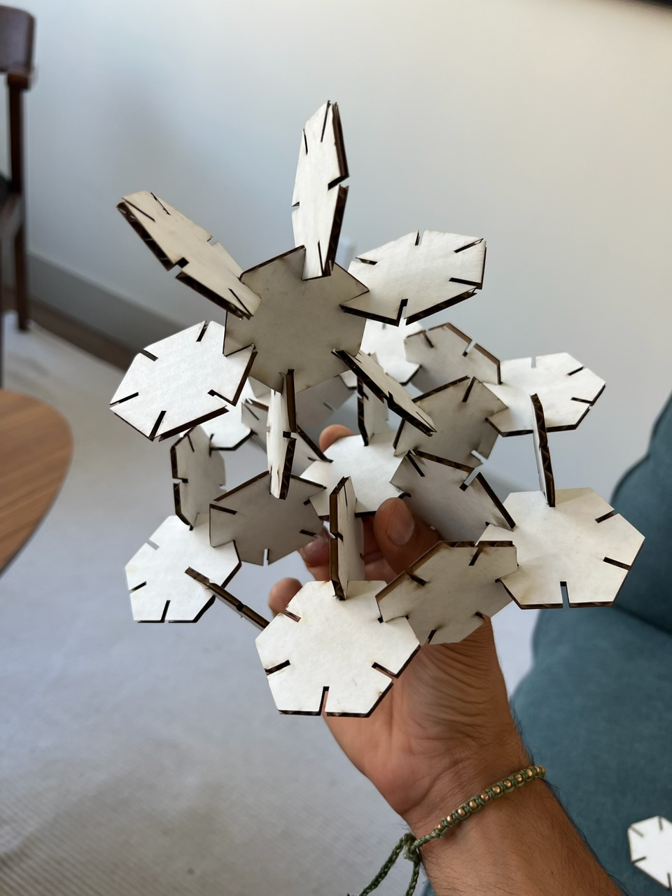

3D Modeling with Grasshopper
The inspiration for this week's assignmet was: SURVIVAL! I did not really follow the Grasshopper tutorial in class and to top that off my Rhino crashed without saving my in-class work. So I started this assignment off with sheer panic.

Luckily, the in-class recording helped me trememendously and I was able to slow down, catch up, and I was grasshopping in no time.
Since I didn't really have a shape or design as my inspiration I was using the tutorial to build a shape that was (a) different than what I'd made in assignment 1 and (b) similar but different enough from what we'd done in class to understand how Grasshopper works. I started with a polygon. I linked it to a number slider so I could play around with the number of sides without having to recode it every time.
Next up: adding rectangular slits to the polygon. This is something I struggled with for a bit. I wasn't able to appropriate line up the slits perfectly with the edges of the polygon so I took a shortcut. I adjusted the count of the rectangles and polygon until it aligned to where I wanted it to be. I know, it's not ideal but I was really just aiming for the low hanging fruit, y'know? (Or MVP as you might call it.)
And BOOM! Your boy has built a shape that pretty much fulfills those assignment requirements! WHOOP WHOOP!
Now that I had the basics figured out, it was time to go beyond that low hanging fruit. I tried and I tried and I tried to figure out how to rotate the rectangles and I couldn't. Until I had an epiphany, "what if I just type rotate in the search box and see if that helps?". And EUREKA! It worked. I know, I know what you're thinking. I'm quite the grasshopper B)
(of course, I hooked it up to the number slider. It's honestly my favorite function in there).
NEXT REQUIREMENT: Make it 3D! But... as you may remember from the in-class tutorial from assignment 1, we need to trim and join the remiaining curves before we extrude (aka make it 3D!. And so I did!
Now what? Time to cut! Unfortunately, the lasers were down the first couple of times I tried to go but then I just decided to wing it and show up at the Mill and ta-da! The lasers had just been fixed. So I got my designs cut and started assembling them.

As I mentioned a little bit ago, I didn't really have an inspiration for this in mind. The only goal was survival. So when I got the laser cut shapes ready, I just started putting them together to see where it would take me! First, I ended up mimicing the Flower of Life from assignment 1 with polygons instead of circles and then I further built on that shape to give it more depth.


Don't ask me what this is. I like to think of it as a crown (but with no stolen jewels) but you can call it "art".
Thanks for checking this out!Here are my source files.
Unfortunately, I left all my Illustrator files I used to make the prints on the Mill's USB but I'll try to update this if I can get my hands on the same USB again :) Thanks for taking the time to view my work. Stay tuned for assignment 2 where I play with a grasshopper...
Finally, special thanks to Nadya Peek for sharing the in-class recording and to Petrina Chan and Mary Gower for allowing me to vent to them about my struggles.